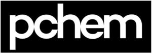

Trade Mark Journal No.2025/037 12 September 2025
WO0000001580753 (7,35,37)
Office of origin: Italy
Date of International Registration:19 January 2021
Date of designation in the UK:
19 January 2021

The mark consists of a sign depicting the fancy wording PCHEM in fancy characters, contained in a rectangular label.
International priority date claimed: 13 October 2020
(Italy)
(302020000086776)
- Class 7
- Centrifugal pumps; suction pumps; controlled volume pumps; pumps, electric; pumps [machines]; pneumatic pumps; rotary pumps; positive displacement pumps; compressed air pumps; centrifugal metering pumps; electric pumps for aquariums; electric pumps for swimming pools; pumps [parts of machines, engines or motors]; beer pumps; sludge pumps; oil drain pumps; pumps for cooling engines; pumps for heating installations; windmill pumps; reverse osmosis pumps; air pumps [garage installations]; electric water pumps for swimming pools; water pumps for spa baths; refrigerant recovery pumps; high-pressure pumps for washing installations; electric water pumps for spa baths; water pumps for water filtering units; pumps [machines] for the beverage industry; pumps for chemical products; pumps for acids; pumps for aggressive products; magnetic-drive centrifugal pumps; pumps for viscous liquids; electromechanical machines for chemical industry; suction machines for industrial purposes; machine tools, power-operated tools; motors and engines, except for land vehicles; machine coupling and transmission components, except for land vehicles; agricultural implements, other than hand-operated hand tools; incubators for eggs; automatic vending machines.
- Class 35
- Retail and wholesale services connected with the sale of centrifugal pumps, suction pumps, controlled volume pumps, pumps, electric, pumps [machines], pneumatic pumps, rotary pumps, positive displacement pumps, compressed air pumps; retail and wholesale services connected with the sale of centrifugal metering pumps, electric pumps for aquariums, electric pumps for swimming pools, pumps [parts of machines, engines or motors], beer pumps, sludge pumps, oil drain pumps; retail and wholesale services connected with the sale of pumps for cooling engines, pumps for heating installations, windmill pumps, reverse osmosis pumps, air pumps [garage installations], electric water pumps for swimming pools, water pumps for spa baths; retail and wholesale services connected with the sale of refrigerant recovery pumps, high-pressure pumps for washing installations, electric water pumps for spa baths, water pumps for water filtering units; retail and wholesale services connected with the sale of pumps [machines] for the beverage industry, pumps for chemical products, pumps for acids, pumps for aggressive products, magnetic-drive centrifugal pumps, pumps for viscous liquids; retail and wholesale services on behalf of third parties, also on-line, of electromechanical machines for chemical industry, suction machines for industrial purposes; presentation of goods on communication media, for retail purposes; providing information and advice to consumers regarding the selection of products and items to be purchased; sales promotion for others; outsourcing services [business assistance]; procurement services for others [purchasing goods and services for other businesses]; demonstration of goods; shop window dressing; sponsorship search; business inquiries; business information; advertising; business management, organization and administration; office functions.
- Class 37
- Pump repair; rental of drainage pumps; repair and maintenance of vacuum pumps; pump repair or maintenance; reconditioning of vacuum pumps and parts thereof; installation, maintenance and repair of compressors, air pumps and vacuum pumps; installation, maintenance and repair of vacuum pumps; repair and maintenance of feed or booster pumps; providing information relating to the repair or maintenance of pumps; installation, maintenance and repair of air pumps; installation, maintenance and repair of pumps and pumping stations; repair and maintenance of vacuum pumps and parts thereof; pump repair or maintenance and providing information relating thereto; repair and maintenance of pumps for chemical products, pumps for acids, pumps for aggressive products; repair and maintenance of magnetic-drive centrifugal pumps; repair and maintenance of pumps for viscous liquids; consultancy and advisory services relating to the repair and maintenance of vacuum pumps and parts thereof; installation, maintenance and repair of compressors, air pumps, vacuum pumps, air blowers, air filters, alternators, pressure regulators and oil separators; repair or maintenance of chemical processing machines and apparatus; repair or maintenance of chemical processing machines and apparatus and providing information relating thereto; servicing, cleaning and repair of chemical apparatus; repair and maintenance of industrial machinery; rental of industrial machines; installation, maintenance, repair and reconditioning of industrial machinery; construction; mining extraction, oil and gas drilling.
PIUSI S.P.A.
Representative: Dr. Modiano & Associati SpA, Via Meravigli, 16, I-20123 Milano, ITALY